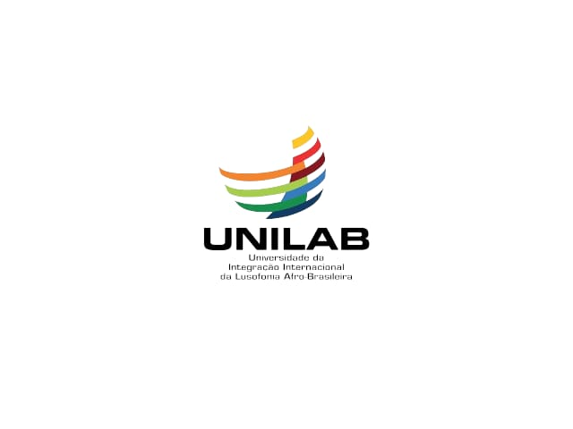

UNILAB
Universidade da Integração Internacional da Lusofonia Afro-Brasileira
Desenvolvido por
Nicolau Capingana

Universidade da Integração Internacional da Lusofonia Afro-Brasileira
Desenvolvido por